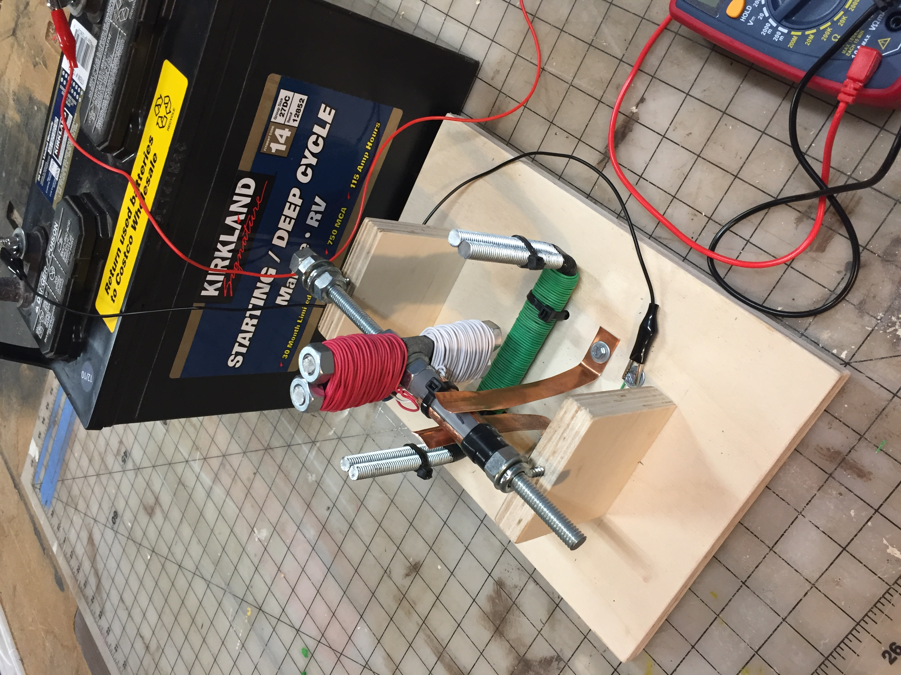
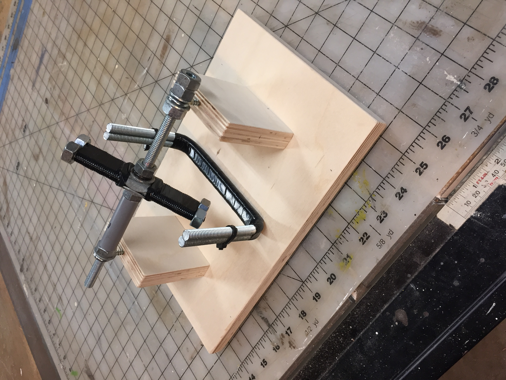

I decided to make a DC motor from bits of threaded rod, nuts, blots, washers, copper drip-edge, and some thermostat wire.
(I hope to add more documentation to this posting later today!)
Return to my home page.
This is the armature before the 18 gauge wire was added. It is constructed using 3/8" threaded rod, 3/8-16 heavy nuts, pvc sleave, and washers.
Here is the motor/kinetic sculpture before any wire has been added.
This is a slow motion video of the Motor in action connected to the 12 volt battery!!